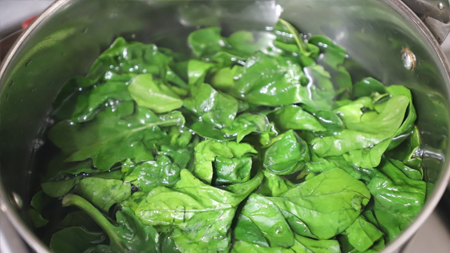

Chilli Pan Mee
Serves 4 | 35 Minutes
Pan mee/ban mian is of Hakka origin. The flat noodles are tossed in spicy umami sauce made with tons of dried chili, garlic, dried shrimp, and seasonings and then topped with ground meat, poached eggs, and crispy anchovies.
-
Ingredients
For Minced Pork
To assemble
-

Instructions
For Minced Pork
-
- 1. Heat oil in a frypan over medium heat. When hot, add the ikan bilis and fry until golden and crispy. Drain the ikan bilis on kitchen paper and set aside.

-
- 2. Drain excess oil, leaving approximately 2tbsp in the frypan. Cook onion and garlic for 3-4 minutes until softened, then add pork and continue to cook until all the pork is cooked through.

-
- 3. Add soy sauce, cooking caramel and five spice powder and continue to cook. After 5 minutes, turn the heat to low and allow to continue cooking until all the liquid has evaporated and the pork mince has turned a dark colour.
To assemble
-
- 1. Bring a large saucepan of water to the boil and cook the wheat noodles according to packed instructions. It will tend to boil over so keep an eye on the pot - I find stirring and skimming off the scum helps to keep it from boiling over.

-
- 2. Remove noodles from boiling water (keep the water in the pot) and place into a colander. Rinse with cold water.
-
- 3. Using the same water in the pot, quickly blanch the baby spinach until just wilted - about 10-20 seconds.
- 
-
- 4. Remove the baby spinach from boiling water, refresh in some cold water and set aside.
-
- 5. Lastly, tip out half the noodle water and bring the water back to a boil. Stir to create a whirlpool and drop the eggs into the middle, one at a time, for two minutes each.

-
- 6. Assemble the chilli pan mee by placing a portion of noodles in a bowl. Top with wilted baby spinach, cooked mince pork, fried anchovies, poached egg and enough crispy chilli to taste. Serve immediately.